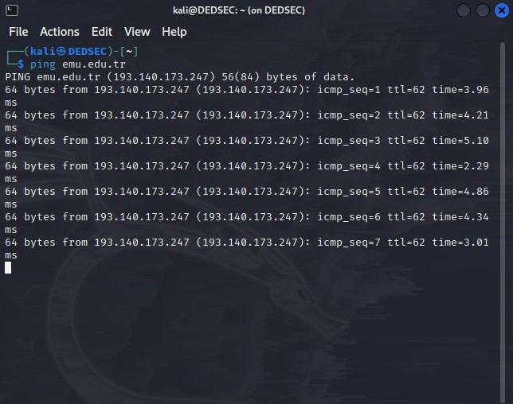

First, select your target's IP address. I am taking emu.edu.tr as a victim. So you know how to get an IP address from a
domain name. Simple doping and that will give to domain IP address.

So now I know the victim's IP Address 193.140.173.247.
Launching Metasploit by typing msfconsole in your kali terminal.
Then you carry out the following steps:
Reflections-
A prevalent type of DDoS (Distributed Denial of Service) attack, SYN flood DDoS assaults are thoroughly explained in the article.
It starts out by presenting the idea of DDoS assaults and how they affect internet services, highlighting how disruptive they can
be. The discussion then moves on to the intricacies of SYN flood assaults, describing how attackers use the TCP three-way
handshake process's weaknesses to overwhelm their targets' servers. The first SYN request, the server's SYN-ACK response,
and the last ACK from the client are all covered in this section, along with the various stages of a SYN flood assault.
The paper also emphasizes how SYN flood assaults are amplified by the use of botnets and fake IP addresses.